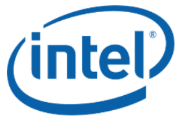

Board-ready reports in a fraction of the time
Executive summaries, incident and RCA briefs, stakeholder updates and a 5-slide management deck — produced from raw performance packs with AI.
- COSTAR prompts
- Gamma & Napkin AI
- Board packs
Decide faster. Report sharper. Lead the AI shift in your team.
Telco leaders sit on more data than almost any industry — churn, ARPU, network KPIs, complaints, vendor SLAs — yet much of it still ends up in late-night slide decks. This hands-on programme shows managers how to turn that data into insight, dashboards and decisions with Generative AI, and leave with a prioritised AI implementation plan for their own function.
Trusted by teams at





AI Productivity, Data & Implementation Mastery equips telco managers to apply Generative AI across network operations, customer experience, commercial performance and leadership decision-making. Day 1 builds AI fluency, prompting and leadership productivity — from outage summaries to board-ready slides. Day 2 moves into knowledge, data analysis, dashboards and a practical AI roadmap for each participant's function.
Every exercise uses telco scenarios: churn and ARPU analysis, network incident reports, complaint data, regulatory briefings and field-ops performance. AI does the heavy lifting; leaders bring the judgement, context and accountability that turn insight into action.
Not theory about AI. Participants build real management outputs from telco-style data, then plan how their own team will adopt AI safely.
Executive summaries, incident and RCA briefs, stakeholder updates and a 5-slide management deck — produced from raw performance packs with AI.
Analyse an anonymised telco dataset, find the root causes, then build an interactive dashboard and a one-page infographic of findings and recommendations.
Use cases for your own function with business problem, data, tools and expected benefit — sequenced into quick wins, mid-term and longer-term initiatives with governance checkpoints.
Most leaders type a one-line request and get a generic answer back. Module 2 teaches the COSTAR framework so AI understands the context, the audience and the decision at stake. Pick a leadership task to see the difference.
Choose a leadership task
Illustrative examples written for this page; figures are fictional. In class, participants run these prompts on anonymised telco-style data and refine the output.
Modules 4 to 7 show how a single raw pack — network KPIs, complaints and sales — becomes the right output for every stakeholder, in hours instead of days.
Spreadsheets and reports from network, CX and commercial — AI cleans, analyses and reshapes them for each audience.
Every participant leaves with initiatives sequenced like this, with owners, data, tools and success metrics.
Pick your function to see which modules matter most and what you could change with AI. Open any module for the details.
I lead…
For your function, what you could do with AI:
Exercise: map AI opportunities in your own function's daily and weekly work.
Exercise: turn "summarise last night's outage for management" into a structured COSTAR prompt and compare the results.
Exercise: run the same telco task — a customer advisory for planned maintenance — across platforms and compare quality.
Exercise: turn a raw monthly performance pack (network KPIs, complaints, sales) into a 5-slide management-ready presentation.
Exercise: consolidate a vendor proposal, a regulatory update and a competitor launch into a one-page management briefing.
Exercise: analyse an anonymised dataset (subscribers, churn, complaints) and present findings, root causes and three recommendations.
Exercise: build an interactive churn or network-performance dashboard and a one-page infographic from the Module 6 analysis.
Workshop: Problem → AI use case → Stakeholders → Tools/data → Pilot → Success metrics → Next action. Teams present 1–2 initiatives ready to pilot.
Participants don't just learn about AI — they leave with work they can use in their next management meeting.
Daily, weekly and monthly packs drafted with AI, so managers spend time on decisions, not formatting.
Churn, ARPU, network and complaint drivers surfaced in hours, not weeks.
Technical network information turned into messages the board, frontline and customers understand.
A pilot-ready roadmap that respects PDPA, IT policy and regulatory obligations.
See each tool work on real leadership tasks, step by step.
Anonymised subscriber, churn, complaint and network KPI datasets.
Network, CX and commercial leaders solve problems together.
Each team presents 1–2 AI initiatives ready to pilot.
No coding or data-science background needed. Participants bring a laptop; we confirm approved AI tools with your IT team beforehand. Pre- and post-training assessments measure progress for your HRD Corp records.

AI Adoption Specialist · Corporate Trainer · Founder, D Action Consultancy
David brings over 20 years of commercial and leadership experience at GlaxoSmithKline (GSK), where he served as Sales Director and earned multiple Sales Excellence Awards. He has sat in the leadership seat — owning targets, reports and teams — and teaches AI as a practical tool for better, faster management decisions.
As founder of D Action Consultancy & Services, he specialises in AI adoption for productivity, data and business transformation. He has trained 6,000+ professionals across 100+ companies — including major banks, insurers, government agencies and multinationals.
Banks, insurers, multinationals, government agencies and growing SMEs.
Run the programme in-house for your management team. Tell us about your functions, data and approved tools — we'll tailor the datasets, scenarios and implementation workshop to your business. HRD Corp claimable.
ChatGPT, Claude, Gemini, NotebookLM, Microsoft Copilot, DeepSeek, Gamma and Napkin AI are trademarks of their respective owners. This independent programme is not affiliated with or endorsed by any of them.